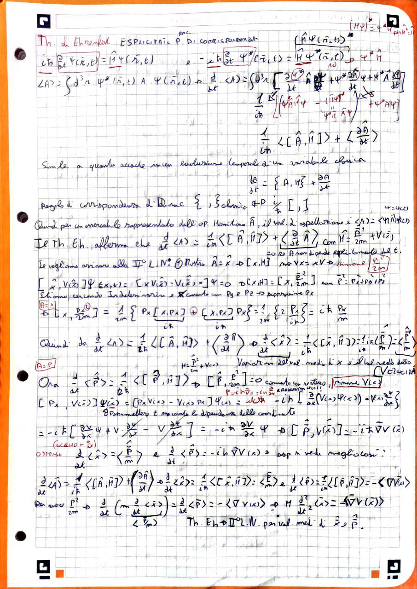
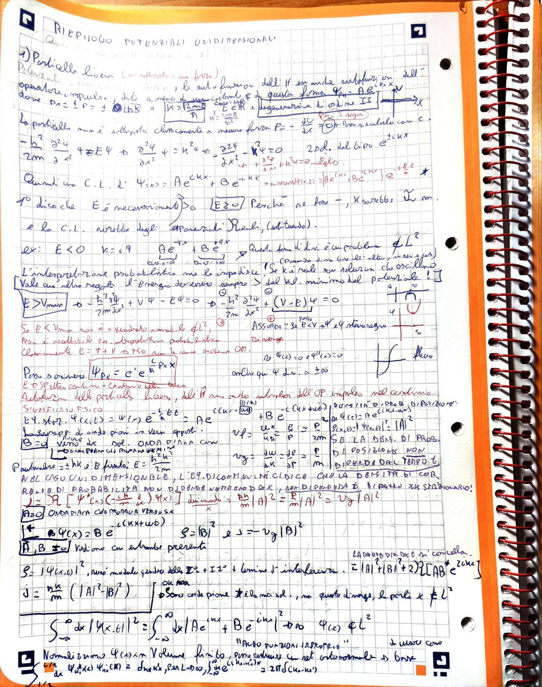
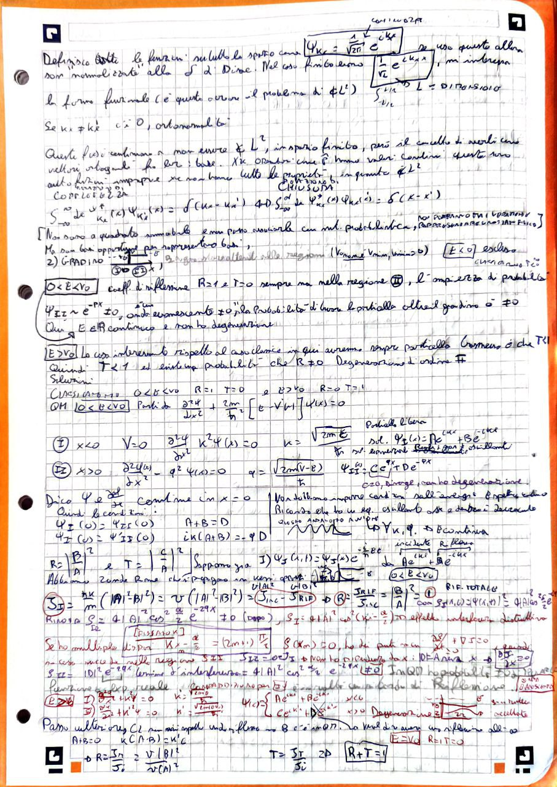
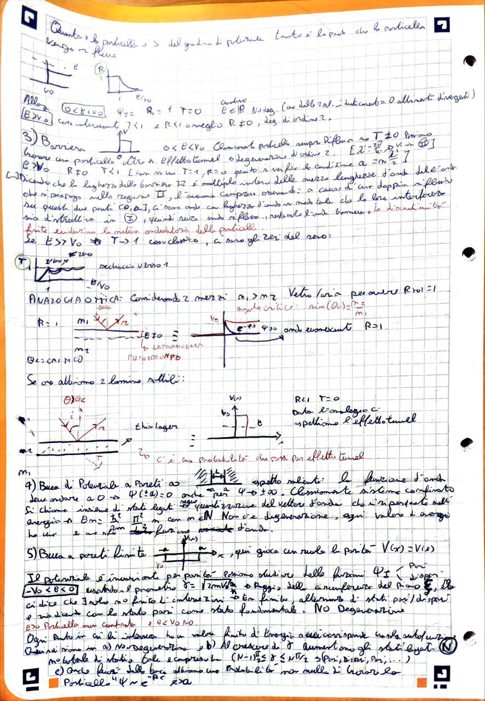
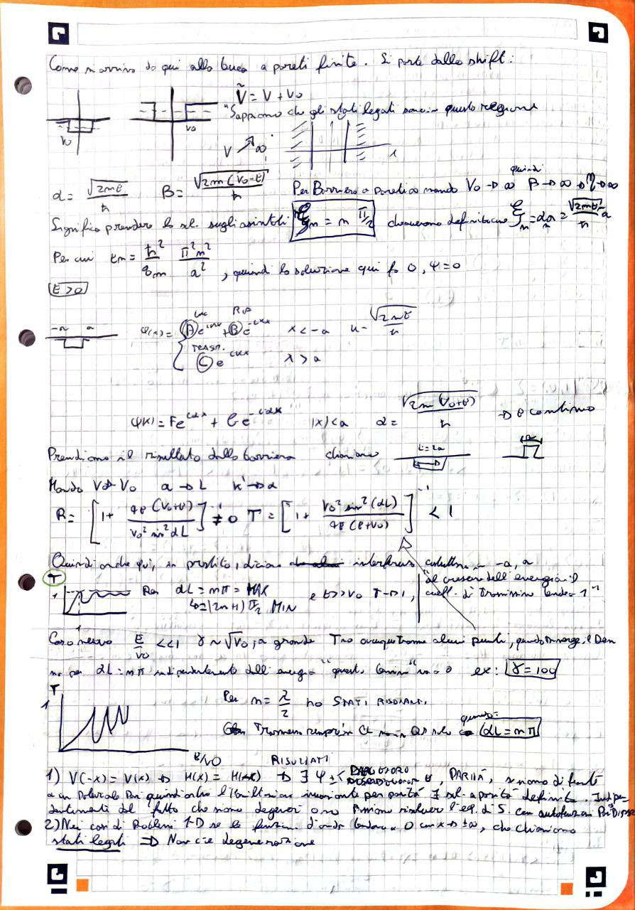
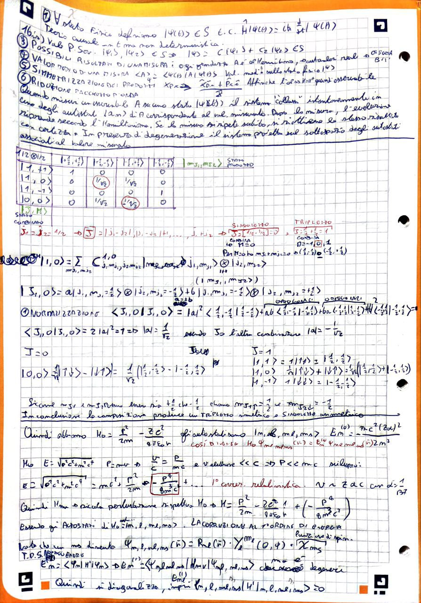
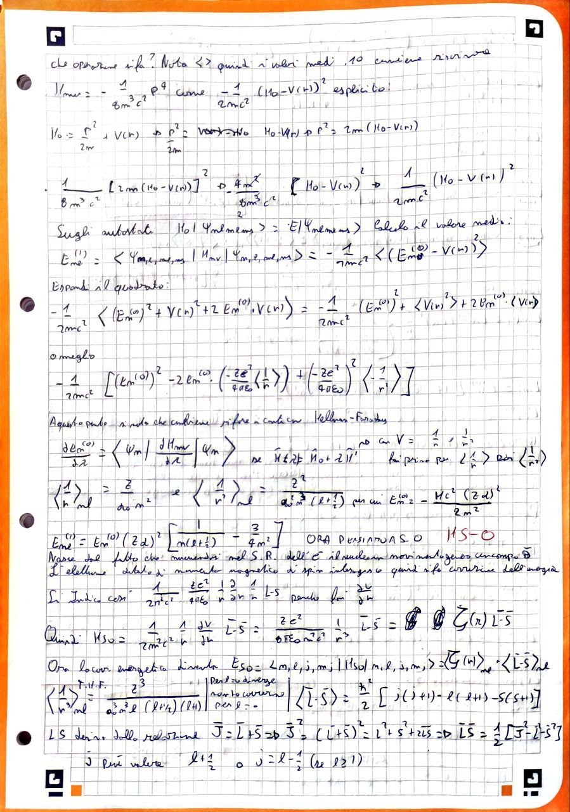
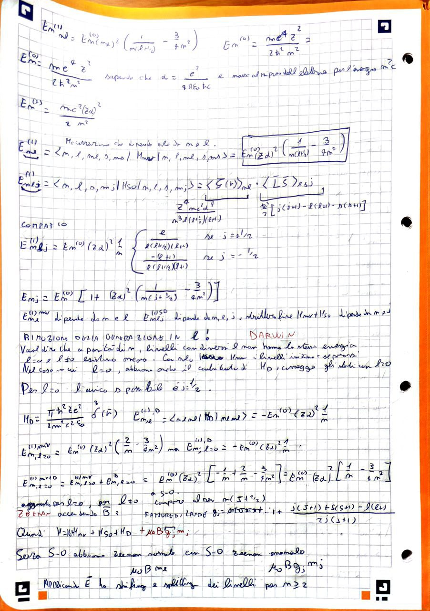
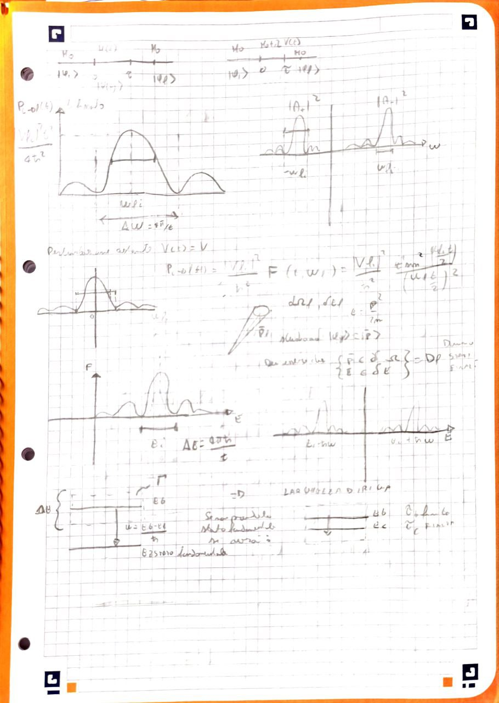
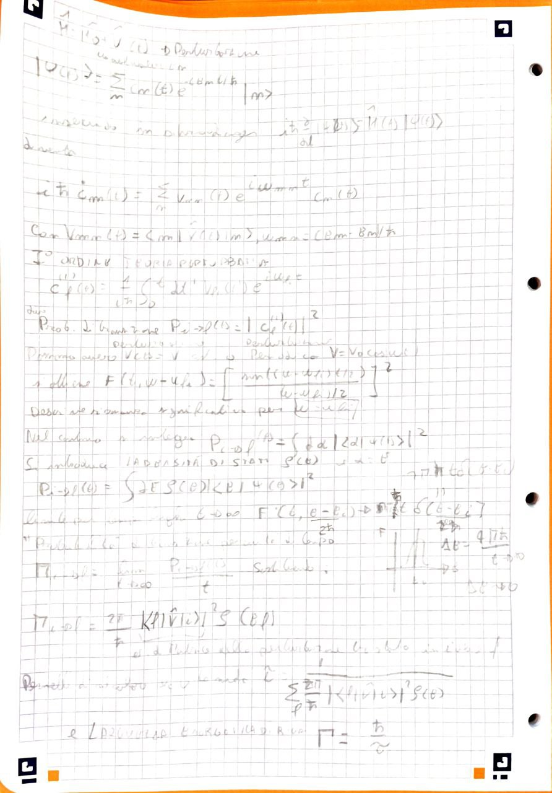

1. StazionariaDIM 7DIM 12
Piccolo parametro energetico.
Base\(\displaystyle \langle m|n^{(1)}\rangle=V_{mn}/(E_n^0-E_m^0),\quad\text{serie controllata se }|\lambda\langle m|n^{(1)}\rangle|\ll1\Rightarrow\epsilon_{mn}=|V_{mn}|/|E_n^0-E_m^0|\ll1\)
H = H₀ + λH'
Eₙ(λ) = Eₙ⁽⁰⁾ + λEₙ⁽¹⁾ + λ²Eₙ⁽²⁾ + …
|ψₙ(λ)⟩ = |φₙ⟩ + λ|ψₙ⁽¹⁾⟩ + λ²|ψₙ⁽²⁾⟩ + …
Eₙ⁽¹⁾ = ⟨φₙ|H'|φₙ⟩
Eₙ⁽²⁾ = Σₖ≠ₙ |⟨φₖ|H'|φₙ⟩|² / (Eₙ⁽⁰⁾ - Eₖ⁽⁰⁾)
|ψₙ⁽¹⁾⟩ = Σₖ≠ₙ ⟨φₖ|H'|φₙ⟩ / (Eₙ⁽⁰⁾ - Eₖ⁽⁰⁾) |φₖ⟩
H = H₀ + λH'
H₀ |φₙ,a⁽⁰⁾⟩ = Eₙ⁽⁰⁾ |φₙ,a⁽⁰⁾⟩ a=1,…,g
H'ₐb = ⟨φₙ,a⁽⁰⁾|H'|φₙ,b⁽⁰⁾⟩
Diagonalizza H'ₐb nel sottospazio degenere:
Σ_b H'ₐb c_b = E⁽¹⁾ cₐ
Eₙ(λ) = Eₙ⁽⁰⁾ + λE⁽¹⁾ + λ²Eₙ⁽²⁾ + …
|ψₙ(λ)⟩ = Σₐ cₐ|φₙ,a⁽⁰⁾⟩ + λ|ψₙ⁽¹⁾⟩ + …
H'_rel = -p⁴/(8m³c²)H'ₗₛ = [1/(2m²c²)] [1/r] [dV/dr] L⋅SH'_Darwin = [ħ²/(8m²c²)] ∇²V(r) (solo per l=0)H'_Zeeman = μ_B L_z BH'_Zeeman,an = μ_B g_J J_z BH'_Stark = -e E z
dEₙ/dλ = ⟨ψₙ | dH/dλ | ψₙ⟩
H(t) = H₀ + V(t)
iħ ∂/∂t |Ψ(t)⟩ = H(t)|Ψ(t)⟩
|Ψ(t)⟩ = Σₙ cₙ(t) e^(−iEₙ t/ħ) |n⟩
iħ d/dt cₘ(t) = Σₙ Vₘₙ(t) e^{iωₘₙ t} cₙ(t)
Vₘₙ(t) = ⟨m|V(t)|n⟩
ωₘₙ = (Eₘ − Eₙ)/ħ
Primo ordine: c_f^(1)(t) = (1/iħ) ∫₀^t V_{fi}(t') e^{iω_{fi}t'} dt'
P_{i→f}(t) = |c_f^(1)(t)|²
P_{i→f}(t) = |c_f^{(1)}(t)|²P_{i→f}(t) = (|V_{fi}|²/ħ²) [sin²(ω_{fi}t/2)/(ω_{fi}/2)²]
V(t) = V₀ cos(ω t) (risonanza per ω ≈ ω_{fi})
Π_{i→f} = (2π/ħ) |⟨f|V|i⟩|² ρ(E_f)
ρ(E_f) = densità di stati finali.
τ = 1 / Σ_{f ≠ i} Π_{i→f}
Γ = ħ / τ
τ) e larghezza di riga (Γ) sono collegate: Γ τ ≈ ħ.









Obiettivo. Costruire una guida decisionale tra perturbazioni stazionarie, degeneri e dipendenti dal tempo.
Prima di scegliere una formula bisogna chiedere: H dipende dal tempo? il livello è isolato? quale simmetria annulla elementi? qual è il rapporto tra accoppiamento, gap e durata? Il formulario è corretto solo dopo questa diagnosi.
Piccolo parametro energetico.
Piccola ampiezza integrata.
Dati e domanda. Due livelli hanno gap comparabile a V.
Calcolo. La formula non degenere diverge o diventa grande; si diagonalizza esattamente il blocco 2x2 e si tratta il resto perturbativamente.
Risultato e controllo. La scelta della base è parte dell'approssimazione.
Un buon riassunto non è un elenco di formule ma un albero di decisione che segnala dove ciascuna formula fallisce.
La lezione integra teoria, calcolo e controlli senza riprodurre letteralmente le dispense.